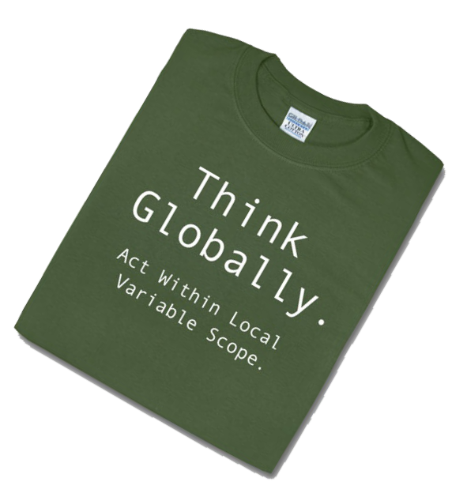

JavaScript
niebezpieczne rewiry
Maciej Brencz, Wikia Inc.
AKAI, 10 stycznia 2012
Maciej Brencz, Wikia Inc.
AKAI, 10 stycznia 2012
var i = 5, foo = 'bar',
bar = function() {
var i = 42;
ajax('/addToCart/cake', function(data) {
console.log(data.result);
});
};
var i = 42;
(function() {
i = 'test'; // zmienna globalna :(
})(); // "immediate function"
console.log(i); // na pewno 42?

var x = 5;
(function () {
console.log(x); // na pewno 5?
var x = 42;
})();
var x = 5;
(function () {
var x;
console.log(x); // undefined
x = 42;
})();
var a, b;
a = b = {foo: true}; // a i b odnoszą się do tego samego obiektu!
a.foo = false;
console.log(b.foo); // też false
var a = {foo:true};
(function(obj) {
obj.foo = false;
})(a);
console.log(a.foo); // false
var a = [1,2]; a[100] = 3; console.log(a.length); // 3? nie, 101
var a = [1,2,3,4]; a.length = 2; console.log(a); // [1,2] - "obcięcie" tablicy
> 0 == ''
true
> 0 == false
true
> (0 === '') || (0 === false)
false
> ({foo: true}) === ({foo: true})
false
var x = 42;
with(obj) {
x = 5; // przypisanie do x czy do obj.x?
}
var foo = {
test: true,
bar: 32,
};
function getObject() {
return
{
foo: 42
}
}
getObject(); // powinniśmy otrzymać obiekt, ale czy na pewno?
Wskazuje najczęstsze błędy w kodzie JS:
> typeof null
'object'
> 2 + '2'
"22"
> 0.1 + 0.2
0.30000000000000004
> parseInt('08')
0 → 8 wg ECMAScript5
> typeof [1, 2, 3]
"object"
> undefined = 'foo'
nie róbcie tego w domu!
> String.prototype.trim> Array.prototype.indexOf> options = options || {}